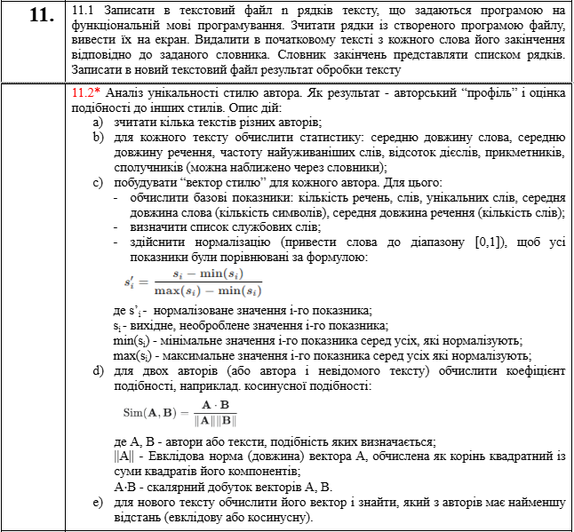
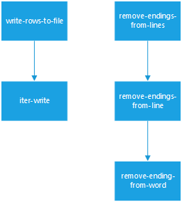
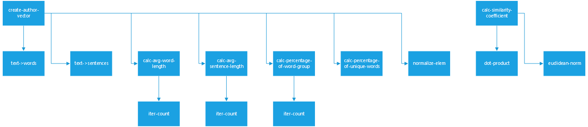
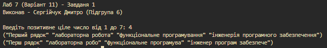
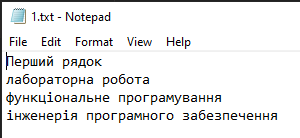
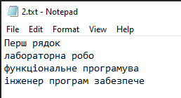

Мета
Опанувати теоретичні основи обробки рядків та текстових файлів мовами функціонального програмування та розробити програми їх реалізації
Умова
Аналіз
Завдання 1
Для виконання даного завдання, в коді програми визначено 7 рядків тексту та список закінчень. Задана користувачем кількість рядків записується у файл, після чого текст з даного файлу зчитується, зі слів прибираються закінчення, а результат записується до іншого файлу
Завдання 2
Для даного завдання було підготовлено набір файлів. Оскільки потрібно працювати з текстами, то було згенеровано такі 3 тексти:
- Людина завжди прагне до пізнання світу. Вона шукає відповіді на вічні питання буття. Чому ми існуємо? Що таке справжнє щастя? Філософи минулого намагалися зрозуміти сенс життя. Вони розмірковували про природу свідомості та реальності. Кожне покоління ставить нові запитання. Проте деякі істини залишаються незмінними. Мудрість приходить з досвідом. Людський розум здатний осягнути складні концепції. Але емоції часто керують нашими вчинками. Ми шукаємо гармонію між розумом і почуттями. Це довгий шлях самопізнання. Кожна людина унікальна у своєму розумінні світу. Вона створює власну реальність через сприйняття. Філософські роздуми збагачують наше життя. Вони допомагають знаходити сенс у повсякденності. Глибокі думки породжують нові ідеї. Ідеї змінюють суспільство та культуру. Ми є творцями власної долі. Наші рішення формують майбутнє. Свобода вибору - найбільший дар людини.
- Комп'ютерні технології розвиваються дуже швидко. Штучний інтелект змінює багато галузей промисловості. Алгоритми машинного навчання аналізують великі масиви даних. Вони виявляють приховані закономірності та тренди. Сучасні процесори обробляють мільярди операцій за секунду. Квантові комп'ютери відкривають нові можливості для обчислень. Нейронні мережі імітують роботу людського мозку. Глибоке навчання використовується в розпізнаванні образів. Системи комп'ютерного зору аналізують зображення та відео. Природна мова обробляється спеціальними моделями. Хмарні сервіси надають потужні обчислювальні ресурси. Розподілені системи забезпечують надійність та масштабованість. Криптографічні методи захищають конфіденційні дані. Блокчейн створює децентралізовані системи зберігання інформації. Інтернет речей об'єднує мільярди пристроїв. Датчики збирають інформацію про навколишнє середовище. Автоматизація підвищує ефективність виробничих процесів. Роботи виконують складні та небезпечні завдання. Технології постійно вдосконалюються та еволюціонують. Інновації впливають на всі аспекти сучасного життя.
- Сучасний світ ставить перед людиною складні виклики. Ми живемо в епоху стрімких змін та трансформацій. Технологічний прогрес змінює наше повсякденне життя. Але чи робить це нас щасливішими? Люди часто відчувають тривогу через невизначеність майбутнього. Вони шукають стабільність у нестабільному світі. Цифрові технології створюють нові форми комунікації. Соціальні мережі об'єднують мільйони користувачів. Проте справжні людські зв'язки стають рідшими. Віртуальна реальність замінює реальні переживання. Ми втрачаємо здатність до глибокої концентрації. Інформаційний потік перевантажує наш мозок. Потрібно знаходити баланс між технологіями та людяністю. Критичне мислення допомагає фільтрувати інформацію. Освіта має адаптуватися до нових умов. Творчість залишається унікальною властивістю людини. Машини не можуть замінити людські емоції. Емпатія та співчуття роблять нас людьми. Важливо зберігати людяність у цифрову епоху. Майбутнє залежить від наших сьогоднішніх рішень.
Також нам потрібно буде знайти частку дієслів, прикметників, сполучників та службових слів. Оскільки не можна просто мати доступ до словника з усіма словами, тому за допомогою штучного інтелекту було отримано всі дієслова, прикметники, сполучники та службові слова, що було у всіх 3 текстах:
-
Дієслова
прагне існуємо шукає намагалися зрозуміти розмірковували ставить залишаються приходить здатний осягнути керують шукаємо створює збагачують допомагають знаходити породжують змінюють формують розвиваються змінює аналізують виявляють обробляють відкривають імітують використовується надають забезпечують захищають створює об'єднує збирають підвищує виконують вдосконалюються еволюціонують впливають ставить живемо змінює робить відчувають шукають створюють об'єднують стають замінює втрачаємо перевантажує знаходити допомагає фільтрувати адаптуватися залишається можуть замінити роблять зберігати залежить
-
Прикметники
вічні справжнє минулого нові незмінними складні довгий унікальна власну філософські глибокі власної найбільший комп'ютерні штучний великі приховані сучасні квантові людського глибоке комп'ютерного природна спеціальними хмарні потужні розподілені криптографічні конфіденційні децентралізовані небезпечні сучасного сучасний складні стрімких технологічний повсякденне щасливішими нестабільному цифрові соціальні справжні рідшими віртуальна реальні глибокої інформаційний критичне унікальною людські людяність цифрову сьогоднішніх
-
Сполучники
і та а але проте чи або що щоб коли якщо тому бо оскільки
-
Службові слова
в у на з до від для про через без під над при за перед між серед я ти він вона ми ви вони мене тебе його її нас вас їх собі свій цей той такий який що хто де коли чому і та а але проте однак чи або ні не так же ж навіть тільки лише вже ще би б
Ці дані використовуються у подальших обчисленнях
HIPO Діаграма
Завдання 1
Завдання 2
Код
Code: Task1
#lang racket
(displayln "Лаб 7 (Варіант 11) - Завданя 1")
(displayln "Виконав - Сергійчук Дмитро (Підгрупа 6)")
(newline)
(define text-rows
'(
"Перший рядок"
"лабораторна робота"
"функціональне програмування"
"інженерія програмного забезпечення"
"ще один рядок"
"привіт світ"
"це речення включає в собі найбільше слів"))
(define endings #("ий" "ія" "та" "ного" "ння" "лів" "т"))
(define file-1 "D:\\1.txt")
(define file-2 "D:\\2.txt")
; Читає позитивне ціле число від 1 до max
(define (read-uint max)
(printf "Введіть позитивне ціле число від 1 до ~a: " max)
(define int (read))
(cond
[(and (number? int) (> int 0) (<= int max) (exact? int)) int]
[else (printf "Некоректні дані\n") (read-uint max)]))
; Повертає перші n рядків з rows
; n знаходится в межах від 1 до розміру rows
(define (take-n-rows rows)
(define n (read-uint (length rows)))
(take rows n))
; Записує рядки до файлу
; - rows: вхідні рядки тексту, який необхідно записати
; - file: шлях до файлу
(define (write-rows-to-file rows file)
(define port (open-output-file file #:exists 'replace))
(define (iter-write rows)
(if (null? rows)
(close-output-port port)
(begin
(displayln (car rows) port)
(iter-write (cdr rows)))))
(iter-write rows))
; Прибирає закінчення з рядків
; - lines: рядки, зі слів яких треба прибрати закінчення
; - filtered: список-акумулятор після прибирання закінчень з вхідних рядків
(define (remove-endings-from-lines lines [filtered '()])
(if (null? lines)
(reverse filtered)
(remove-endings-from-lines (cdr lines) (cons (remove-endings-from-line (car lines)) filtered))))
; Прибирає закінчення з кожного слова рядка line
(define (remove-endings-from-line line)
(define words (string-split line))
(define len (length words))
(define (iter-remove-ending words [index 0] [filtered-list '()])
(if (< index len)
(iter-remove-ending (cdr words) (+ index 1) (cons (remove-ending-from-word (car words)) filtered-list))
(string-join (reverse filtered-list) " ")))
(iter-remove-ending words))
; Прибирає закінчення із слова
; - word: слово, з якого прибирається закінчення
; - ending-index: індекс закінчення, яке розглядається на поточній ітерації
(define (remove-ending-from-word word [ending-index 0])
(cond
[(< ending-index (vector-length endings))
(define ending (vector-ref endings ending-index))
(define ending-len (string-length ending))
(if (string-suffix? word ending)
(substring word 0 (- (string-length word) ending-len))
(remove-ending-from-word word (+ ending-index 1)))]
[else word]))
(define n-rows (take-n-rows text-rows))
(write-rows-to-file n-rows file-1)
(define lines (file->lines file-1))
(write lines)
(newline)
(define filtered-lines (remove-endings-from-lines lines))
(write filtered-lines)
(write-rows-to-file filtered-lines file-2)
Code: Task 2
#lang racket
(displayln "Лаб 7 (Варіант 11) - Завданя 2")
(displayln "Виконав - Сергійчук Дмитро (Підгрупа 6)")
(newline)
; Повертає текст з файл у вигляді string
(define (read-text file)
(string-downcase (file->string file)))
; Повертає текст з файлу у вигляді списку слів
(define (read-word-list file)
(string-split (file->string file)))
(define text-A (read-text "./A.txt"))
(define text-B (read-text "./B.txt"))
(define text-C (read-text "./C.txt"))
(define function-words (read-word-list "./function-words.txt"))
(define verbs (read-word-list "./verbs.txt"))
(define adjectives (read-word-list "./adjectives.txt"))
(define conjunctions (read-word-list "./conjunctions.txt"))
; Перетворює текст на список слів, без розділових знаків
(define (text->words text)
(string-split (regexp-replace* #rx"[.,:;!?\"'…()—\\-]+" text "")))
; Перетворює текст на список речень, де розділові знаки зберігаються
(define (text->sentences text)
(regexp-split #rx"[.!?]+" text))
; Обчислює середню довжину слова
(define (calc-avg-word-length words)
(define (iter-count words-left [sum 0] [count 0])
(cond
[(null? words-left) (if (zero? count) 0 (exact->inexact (/ sum (length words))))]
[else
(let* ([word (car words-left)]
[len (string-length word)])
(if (zero? len)
(iter-count (cdr words-left) sum count)
(iter-count (cdr words-left) (+ sum len) (+ count 1))))]))
(iter-count words))
; Обчислює середню довжину речення
(define (calc-avg-sentence-length sentences)
(define (iter-count sentences-left [sum 0] [count 0])
(cond
[(null? sentences-left) (if (zero? count) 0 (exact->inexact (/ sum (length sentences))))]
[else
(let* ([words (text->words (car sentences-left))]
[len (length words)])
(if (zero? len)
(iter-count (cdr sentences-left) sum count)
(iter-count (cdr sentences-left) (+ sum len) (+ count 1))))]))
(iter-count sentences))
; Повертає відсоток вживання специфічних слів
; - words список всіх слів
; - word-group: специфічна група слів
(define (calc-percentage-of-word-group words word-group)
(define (iter-count words-left [count 0])
(cond
[(null? words-left)
(if (zero? count) 0 (exact->inexact (/ count (length words))))]
[else
(iter-count (cdr words-left) (if (member (car words-left) word-group) (+ count 1) count))]))
(iter-count words))
; Повертає частку унікальних слів в тексті
(define (calc-percentage-of-unique-words words)
(define unique-words (remove-duplicates words))
(if (zero? (length unique-words))
0
(exact->inexact (/ (length unique-words) (length words)))))
; Нормалізує список до діапазону [0, 1)
(define (normalize-list values)
(let ([min-val (apply min values)]
[max-val (apply max values)])
(define (normalize-elem values-left [normalized '()])
(if (null? values-left)
normalized
(normalize-elem (cdr values-left) (cons (/ (- (car values-left) min-val) (- max-val min-val)) normalized))))
(normalize-elem values)))
; Створює вектор стилю на основі тексту
(define (create-author-vector text)
(let* ([words (text->words text)]
[sentences (text->sentences text)]
[number-of-words (length words)]
[number-of-sentences (length sentences)]
[avg-word-length (calc-avg-word-length words)]
[avg-sentence-length (calc-avg-sentence-length sentences)]
[percentage-of-unique-words (calc-percentage-of-unique-words words)]
[percentage-of-verbs (calc-percentage-of-word-group words verbs)]
[percentage-of-adjectives (calc-percentage-of-word-group words adjectives)]
[percentage-of-conjunctions (calc-percentage-of-word-group words conjunctions)]
[percentage-of-function-words (calc-percentage-of-word-group words function-words)])
(printf "Кількість слів: ~a\n" number-of-words)
(printf "Кількість речень: ~a\n" number-of-sentences)
(printf "Середня довжина слова: ~a\n" avg-word-length)
(printf "Середня довжина речення: ~a\n" avg-sentence-length)
(printf "Відсоток унікальних слів: ~a\n" percentage-of-unique-words)
(printf "Відсоток дієслів: ~a\n" percentage-of-verbs)
(printf "Відсоток прикметників: ~a\n" percentage-of-adjectives)
(printf "Відсоток сполучників: ~a\n" percentage-of-conjunctions)
(printf "Відсоток службових слів: ~a\n\n" percentage-of-function-words)
(normalize-list (list avg-word-length avg-sentence-length
percentage-of-unique-words percentage-of-verbs
percentage-of-adjectives percentage-of-conjunctions
percentage-of-function-words))))
; Повертає скалярний добуток двох векторів
(define (dot-product v1 v2 [product 0])
(if (null? v1)
product
(dot-product (cdr v1) (cdr v2) (+ product (* (car v1) (car v2))))))
; Повертає евклідову норму вектора
(define (euclidean-norm v [norm 0])
(if (null? v)
(sqrt norm)
(euclidean-norm (cdr v) (+ norm (expt (car v) 2)))))
; Обчислює коефіцієнт подібності текстів
; - v1, v2: вектори стилю для першого та другого текстів
(define (calc-similarity-coefficient v1 v2)
(exact->inexact (/ (dot-product v1 v2) (* (euclidean-norm v1) (euclidean-norm v2)))))
(define vec-A (create-author-vector text-A))
(define vec-B (create-author-vector text-B))
(define vec-C (create-author-vector text-C))
(define sim-A-B (calc-similarity-coefficient vec-A vec-B))
(define sim-A-C (calc-similarity-coefficient vec-A vec-C))
(define sim-B-C (calc-similarity-coefficient vec-B vec-C))
(printf "Коефіцієнт подібності між A та B: ~a\n" sim-A-B)
(printf "Коефіцієнт подібності між A та C: ~a\n" sim-A-C)
(printf "Коефіцієнт подібності між B та C: ~a\n\n" sim-B-C)
(if (< sim-A-C sim-B-C)
(printf "Стилю нового тексту більше подібний до стилю автора A")
(printf "Стилю нового тексту більше подібний до стилю автора B"))
Результати
Завдання 1
  Завдання 2

Перевірка
Дане завдання не потребує перевірки
Перевірка коду ШІ
Завдання 1
Введний запит: "чи відповідає даний код на мові програмування racket критеріям простоти та clean code? (код завдання №1)"
Відповідь Chat GPT:
✅ Що зроблено добре
-
Ясна структура програми
Є послідовність дій: зчитування кількості рядків → запис у файл → обробка → запис у новий файл
-
Коментарі зрозумілі й описові
Кожна функція має короткий опис із параметрами — це дуже добре для читабельності
-
Рекурсія реалізована чисто
Функції remove-endings-from-lines, remove-endings-from-line, remove-ending-from-word не мають побічних ефектів, повертають нові значення
-
Використання іменованих параметрів
Наприклад, [filtered '()] і [ending-index 0] — гарна практика для рекурсивних допоміжних функцій
⚠️ Моменти, які можна покращити
-
Надлишкова рекурсія замість вбудованих функцій
Racket має потужні засоби для обробки списків, які замінюють багато ручних рекурсій
Наприклад:
Code(define (remove-endings-from-lines lines) (map remove-endings-from-line lines))замість ручного рекурсивного варіанта з акумулятором.
Те ж саме можна зробити для remove-endings-from-line:
Code(define (remove-endings-from-line line) (string-join (map remove-ending-from-word (string-split line)) " "))➡️ Це значно спрощує код, робить його лаконічнішим і читабельнішим.
-
Повторення схожих структур
У тебе є три дуже схожі рекурсивні функції (remove-endings-from-lines, remove-endings-from-line, remove-ending-from-word), які мають однакову логіку обходу списку або вектора.
Для чистоти коду бажано мінімізувати повторення
Наприклад, можна винести спільний рекурсивний шаблон або, краще, використовувати вбудовані функції: map, filter, foldl, ormap.
-
write-rows-to-file можна спростити
Функція записує рядки через рекурсію, але це можна зробити просто через for або for-each:
Code(define (write-rows-to-file rows file) (call-with-output-file file (λ (port) (for-each (λ (line) (displayln line port)) rows)) #:exists 'replace))➡️ Так код коротший і не потребує ручного закриття порту.
-
Назви функцій
Назви загалом добрі, але трохи довгі. Наприклад:
- remove-endings-from-lines → strip-endings-lines
- remove-ending-from-word → strip-ending
Коротші імена полегшують читання, якщо вони залишаються зрозумілими
Завдання 2
Введний запит: "чи відповідає даний код на мові програмування racket критеріям простоти та clean code? (код завдання №2)"
Відповідь Chat GPT:
✅ Сильні сторони (відповідають clean code)
-
🧩 Модульність
Код чудово розбитий на дрібні функції, кожна з яких виконує одну чітку задачу — це головний принцип clean code (“one responsibility rule”).
-
🗒 Коментарі зрозумілі
Кожна функція має опис, а у складних місцях пояснено параметри — це підвищує зрозумілість для читача.
-
📛 Іменування функцій і змінних
Імена описові, короткі й однозначні (calc-avg-word-length, normalize-list, create-author-vector тощо).
Вони показують, що робить функція, а не як.
-
📚 Послідовна структура програми
Є логічний порядок:
- читання файлів
- обробка тексту
- формування векторів
- обчислення коефіцієнтів
- висновок результату
-
🔁 Мінімум дублювання коду
Більшість повторюваних шаблонів (обхід списку, підрахунок середніх тощо) винесено у функції
-
📏 Розділення даних і логіки
Списки слів (verbs, function-words тощо) завантажуються з файлів, не “захардкожені” у коді
Місця для вдосконалення
Нижче — не помилки, а рекомендації, щоб код був ще чистішим і простішим
-
🔄 Рекурсія там, де варто використати map, for або foldl
У Racket (як і в більшості функціональних мов) ітерації через рекурсію виглядають громіздко, коли є стандартні абстракції.
Наприклад, ось спрощений варіант функції:
Code(define (calc-avg-word-length words) (define lens (map string-length words)) (if (null? lens) 0 (/ (apply + lens) (length lens))))➡️ Це зменшує код у 3–4 рази без втрати зрозумілості.
Те саме можна зробити і для calc-avg-sentence-length, dot-product, euclidean-norm і normalize-list.
-
⚠️ Дрібні логічні неточності
Функції calc-avg-word-length і calc-avg-sentence-length у середині рекурсії ділять на (length words) або (length sentences), хоча вже є count, який і є правильним дільником. Це не критично, але можна виправити для точності.
-
📦 normalize-list можна переписати простіше
Зараз вона вручну формує список через рекурсію, хоча це можна зробити в один рядок:
Code(define (normalize-list values) (define min-val (apply min values)) (define max-val (apply max values)) (map (λ (x) (/ (- x min-val) (- max-val min-val))) values)) -
💬 Вивід змішується з обчисленнями
Функція create-author-vector не тільки створює вектор, але й друкує статистику.
Для чистоти її варто розділити на дві:
Code(define (create-author-vector text) ...) (define (print-author-stats text) ...)або ж використовувати додатковий прапорець (#:print? #t), щоб відокремити обчислення від побічних ефектів.
-
🧮 Формули можна спростити за допомогою for/sum
Наприклад:
Code(define (dot-product v1 v2) (for/sum ([a v1] [b v2]) (* a b))) (define (euclidean-norm v) (sqrt (for/sum ([x v]) (sqr x))))Це лаконічніше й більш “Racket-стиль”.
Висновок
В даній лабораторній роботі було продеменстровано роботу з файлами та текстом в мові racket